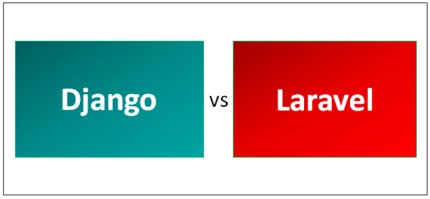

Django vs Laravel
Created at : Monday, 12 September 2022 The choice of a web framework like Django vs Laravel is one of the most crucial decisions in web development. It can make or break a project because a web framework works like a “skeleton” on which you’ll build your web application.
Django and Laravel are two of the most prominent web frameworks. Both have excellent features, functionalities, and capabilities to support and meet user demands in various industry verticals.
Django
The Django Software Foundation developed the Django framework. Django was initially released in the year 2005. Django was licensed by a 3-clause BSD (Berkeley Software Distribution) license. Django is being used in some well-known websites like Mozilla, Instagram, Bitbucket, Pinterest, etc.; all the maintenance and releases will be managed by the Django Software Foundation. Django is lightweight and has a standalone feature for development and testing purposes. The Django framework’s primary goal is to ease the development of complex web applications in lesser time.
Laravel
Laravel was created and developed by Taylor Otwell. MIT License licensed Laravel. It was initially released in the year 2011. Laravel needs basic or advanced knowledge of PHP. Laravel can be used to develop Content Management System (CMS) applications. Laravel has upscale features in terms of more user traffic. The development time can be reduced in terms of framework feature, which provides inbuilt features to ease a developer’s life. Laravel has good features to develop a web application from scratch in an easier way.
Key Differences Between Django and Laravel
Below are the lists of points, describe the key differences between Django and Laravel performance :
- Django is a high-level web framework based on Python that provides rapid development and clean design solution, whereas the Laravel framework is also a web application framework with elegant syntax and with different features such as routing, sessions, authentication and caching.
- Django provides rapid development, the greater community, great packages, easy to learn, great libraries, whereas Laravel provides quick development mode, dependency injection, application architecture, good community packages, MVC model, growing community, etc.,
- Django has few cons in a few features, which are unsupported or less performance templating, URL dispatchers, underpowered object-relational mapping, internal subcomponents coupling, whereas Laravel has few cons like huge static methods calling and slow performance.
- Django has various middlewares support, whereas Laravel has only HTTP middlewares. Django is a little bit faster as it uses the programming language Python, which is faster, whereas Laravel uses PHP, which is a little bit slower.
- Django has a lot of built-in tools like decorators, SEO tools, third-party libraries etc., whereas Laravel has simpler features and contains method injection.
- Django components are lightweight and have serialization and validating systems that are used to translate between web page forms and database values, whereas Laravel has a composer tool that loads all the dependencies and libraries using a file called composer.json file that is used to place in a source folder.
- Django supports Object-Relational Mapping (ORM) that provides an interface between application and database to persist the data from a database efficiently, whereas Laravel has query builder and Object Relational Mapping (ORM) support with an active record implementation.
- Django supports multi ligula support, which is compatible with different multilingual websites by its built-in internationalization system, which is present in its internal system, whereas Laravel contains different namespaces and interfaces which are used to organize and manage the resources.
Comparison Table Between Django and Laravel
Following is the comparison table between Django and Laravel performance.
| Parameter | Django | Laravel |
|---|---|---|
| Definition | It is a Full Stack web application framework written in Python | It is a Full Stack web application framework written in PHP |
| Maintenance | It is maintained by Django Software Foundation | It is being maintained by the developer itself and their community under MIT license. |
| Architecture | It is a Model View Template (MVT) model | It is a Model View Controller (MVC) model |
| Platform | It supports cross-platform | It supports cross-platform |
| Generality | It has a rapid development feature with a great community users group | It has clean architecture and a growing community base |
| Scalability | Supports high scalability | Laravel also supports high scalability, but the only difference is the language used to write the framework. |
Conclusion
Django web application framework supports Python, whereas Laravel supports PHP. The only differences between Django vs Laravel frameworks are that the language they support, and several different features and libraries exist to fulfill different requirements. There exist a lot of pros and cons as well as to understand the differences between Django vs Laravel performance. In terms of scalability, easier development, maintenance, and testing, Django is highly considered where Python also provides faster execution which further improves the speed of the application.
The choice of the framework can be decided based on the language and framework’s features to fulfill the customer requirements. This has to be taken care of at the time of designing the solution for the application. In terms of user community popularity, Django rates well and good, and Laravel also rates nearly good similar to Django where it lacks some pros as compared to Django.